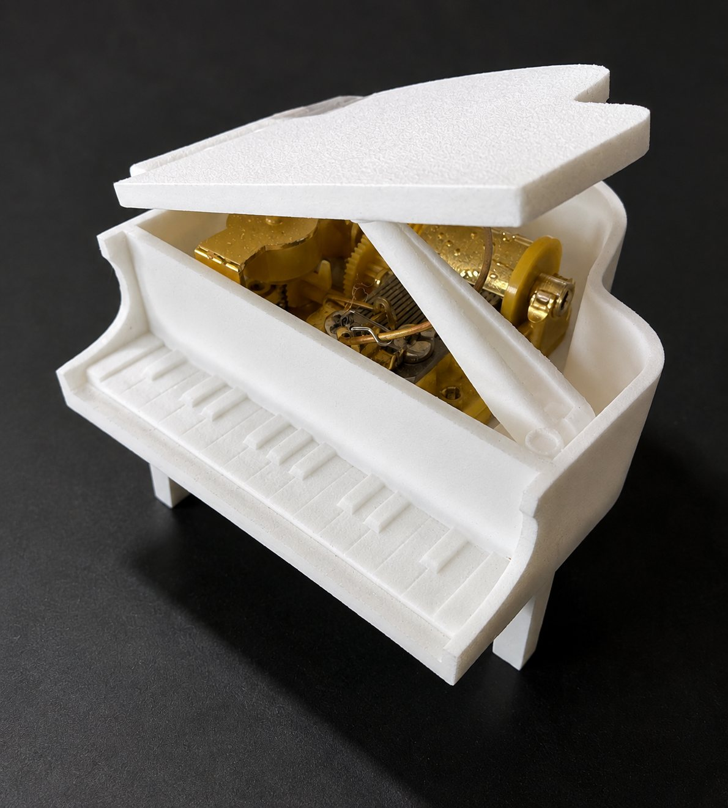
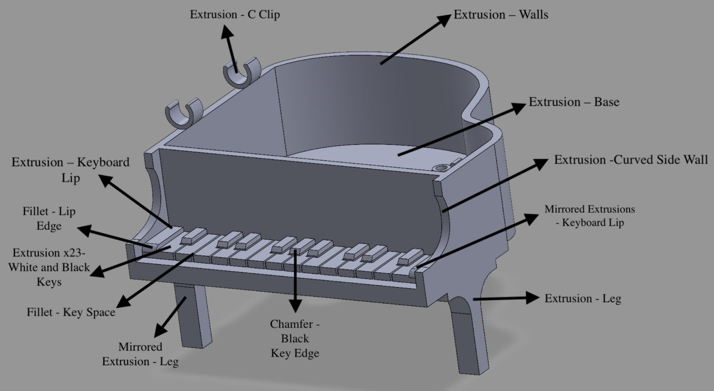
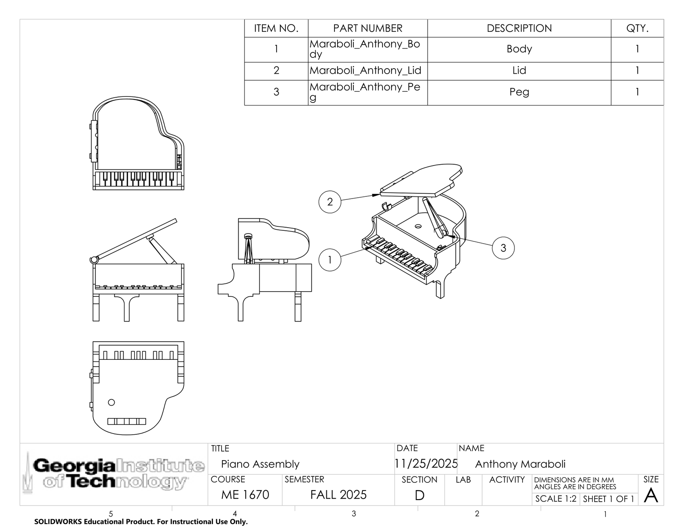

Grand Piano Music Box
A miniature grand piano modeled in SolidWorks and printed in three parts, built around a real music box movement so that closing the lid stops the music.

The problem
Design a printable grand piano that fits inside a 3 inch cube and holds a real 18-note music box movement, with the lid acting as the on/off switch.
How I solved it
The first design used a conventional piano hinge, but at this scale its knuckles were only a few millimeters wide and would not print. I replaced it with flexing snap-fit C-clips at 1 mm thickness, sized to bend without breaking. Body walls are 2 mm for stiffness.
The moving parts came straight off the music box manufacturer's dimensioned drawing: a housing that captures the stopper pin, and a bore in the base for the wind-up shaft. Open the lid and the pin rises and the music plays. Close it and the lid presses the pin down. I built a SolidWorks assembly to check clearances and fit before printing anything.
How it turned out
I measured about 20 features with calipers against the CAD. Most were within 0.1 to 0.3 mm. External dimensions came out slightly small and internal ones slightly large, which is normal for FDM printing.
| Feature | CAD | Printed | Diff |
|---|---|---|---|
| Music box pin bore | 5.00 | 4.97 | 0.60% |
| Global width | 74.00 | 73.99 | 0.01% |
| Global height | 46.50 | 46.22 | 0.60% |
| Lid width | 76.00 | 76.21 | 0.28% |
| Peg snap-fit gap | 3.50 | 2.70 | 22.9% |
All values in millimeters. The peg gap closing up by 0.8 mm was the biggest deviation, and it worked in my favor. That part is meant to flex, so the tighter fit made the joint more secure.
The lid's C-clip never printed. In CAD the hinge bar touched the body wall at a perfect tangent, which is a zero-thickness contact the slicer could not build a toolpath against, so it skipped the feature entirely. I bonded the lid in place on the physical model. The fix is to add a small support block behind the hinge cylinder so the circle overlaps a flat face instead of touching at a single point.

